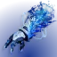
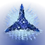
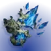
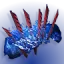
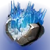
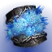

冰影碎片
冰影分支职业固有。
碎裂一块冰影水晶或一名被冻结的战斗人员，或击杀受冰影减益（减速、冻结）影响的战斗人员，会生成一枚冰影碎片。
掉小型碎片；、、与掉大型碎片。
拾取提供近战技能能量：小型 10%，大型 50%。
破碎状态持续 20 秒，盟友能拿到使用者生成的每一份。
装上 冰川收获 冷酷收割
冷酷收割

构造收割 之后小型碎片额外恢复 10 生命值并提供 1 层冰霜护甲；大型碎片恢复 20 生命值并提供 3 层。
冰影分支职业固有。
碎裂一块冰影水晶或一名被冻结的战斗人员，或击杀受冰影减益（减速、冻结）影响的战斗人员，会生成一枚冰影碎片。
掉小型碎片；、、与掉大型碎片。
拾取提供近战技能能量：小型 10%，大型 50%。
破碎状态持续 20 秒，盟友能拿到使用者生成的每一份。

构造收割 之后小型碎片额外恢复 10 生命值并提供 1 层冰霜护甲；大型碎片恢复 20 生命值并提供 3 层。
可在表面生成的实心柱，生命值随体型而定（小型 ? ｜ 中型 ? ｜ 大型 ?），最长存在 15 秒。
生成时对 2.6 米内的战斗人员施加冻结（PvP 为 15 层减速，持续 1.5+0.5 秒）。
打空生命值即可摧毁，在 8 米半径内最多造成 158 [25] 伤害。
使用者对自己的水晶造成双倍伤害。
每层提供 7% [2%] 伤害抗性，5 层时最高 31.25% [10%]。每 5 秒衰减 1 层。
超能期间每层提供的抗性会降低到 ?% [?%]。
装备碎片「韵律之吟」时上限提高到 7 层，最高抗性 50% [16%?]，每层持续时间变为 6 秒。
被减速的战斗人员在移动与武器性能上受多项惩罚；层数攒到 100 层即冻结。
被减速的战斗人员移动速度降低 50%，精度下降。
被减速的移动速度与跳跃高度各降 50%，无法使用移动技能，受到的退缩提高 ?%，武器属性也受惩罚。
武器属性惩罚：
稳定性、操控性、填装速度与后坐方向降低 75%。
惩罚在武器 Perk 结算之后施加，施加前属性视为无上限——例如 160 填装速度会降到 40，80 操控性会降到 20。
过载勇士受到任意层数减速时进入眩晕。
被冻结的战斗人员被完全定身，无法射击、使用技能或移动。
它们受到特殊与威能武器的伤害提高 10%，受到电弧、烈日与虚空技能的伤害提高 5%，受到主武器的伤害降低 5% [60%]。
被冻结的、与另外承受 +120% 的基础与偃月近战伤害。
被冻结的战斗人员在受到伤害后碎裂，PvP 固定 200 伤害。
定身时长 6 [1.35 至 4.75] 秒；不受冻结阻碍，3 秒后自动碎裂。扎根的可以立即施放超能挣脱。
短暂冻结 ｜ 被其它冻结，持续 1.35 秒。
长时间冻结 ｜ 被战斗人员或冰影超能冻结，持续 4.75 秒。
被冻结的职业技能被替换为突围，可以用 ? 生命值换取挣脱持久冻结。
漫游超能期间被冻结的 1 秒后自动挣脱；一次性超能若在施放动画中被冻结则会被停用。
被冻结的战斗人员可以被伤害打碎裂，也可以由特定冰影星相直接引爆，对 ? 米内的战斗人员最多造成 361 [?] 伤害。
势不可挡勇士受到碎裂伤害时进入眩晕。
击杀被冻结的战斗人员生成一枚能量球，提供 2.5% 超能能量。
生成能量球后有 10 秒冷却。
冰霜护甲激活期间的击杀推进计数，满 100% 生成一枚小型冰影碎片。
34% ｜ 67% ｜ 100% ｜ ?%。
冰影武器击杀推进计数，满 100% 生成一枚小型冰影碎片。
34% ｜ 67% ｜ 100% ｜ 67%。
生成碎片后有 5? 秒冷却，冷却期间的击杀不推进计数。
15 米内的冰影碎片在 1 秒延迟后被拉向使用者。
减速减益与部分技能持续更久。
受影响的来源会在常规时长或层数旁用小字标出增量，例如 25 秒 → 25+5。
碎裂战斗人员或摧毁水晶时：
额外造成一次伤害实例，在 10 [8] 米半径内最多造成 25 [9] 伤害。
衰减后最低仍有 15 [4] 伤害。
用近战伤害碎裂一名战斗人员时提供 1 层冰霜护甲。

冻结一名战斗人员提供 +? 操控性与 +30 生命值，持续 11 秒。
冰影碎片提供的近战能量提高 60%。
与其它来源（例如渴望回响的满溢金库 +260%）相加。
造成充能近战伤害时补满所有武器并提供 +40 操控性，持续 5 秒。
增益持续时间即为冷却时间。
击杀受冰影效果影响的战斗人员，按等级提供职业技能能量：
T1 级战斗人员 9% ｜ T2 13% ｜ 15% ｜ T3 20% ｜ T4 30% ｜ 40% ｜ 50%。
主武器弹药的武器对冰影水晶伤害提高 100%，对被冻结的战斗人员伤害提高 50%。
包括战狮、零号修订、Vex 揭秘者，以及它们各自的开火模式。
冰霜护甲激活期间，造成或受到物理近战伤害都会施加 10? 层减速，持续 ?+? [?+?] 秒。
偃月近战同样适用。
强化冰霜护甲：上限提高到 7 层（伤害抗性 50% [16%?]），每层持续时间变为 6 秒。
摧毁一块冰影水晶时，手雷基础充能速度额外 +500% [150%]，持续 6 秒，最长 11 秒。
受到伤害时提供 7% 手雷技能能量；冰霜护甲激活期间提高到 12%。
两次回能之间有 1 秒冷却。
中型弹道 ｜ 追踪器
直接命中战斗人员施加 50 [?] 层减速，持续 4+2 秒，并计为冰影手雷技能伤害。
撞地 0.8 秒后生成一枚追踪器，以 17 米/秒追踪 20 米内最近的战斗人员，持续 1 秒，追踪强度逐渐减弱。
追踪器到达战斗人员或到期时引爆，造成 20 [20] 伤害并冻结 3 [1.75] 米内的战斗人员。
若追踪器冻结了一名战斗人员，会再生成一枚瞄准另一名战斗人员，最多连锁 2 次。
追踪器每冻结一名战斗人员就复制一枚；连锁 1、2、3 次后引爆时分别生成小型、中型与大型冰影水晶。
中型弹道 ｜ 持续伤害场域
接触时引爆，在 ? 米半径内最多造成 20 [20] 伤害并施加 20 [10] 层减速（持续 2+2 秒），同时生成一片减速场域。
场域每 0.35 [0.3] 秒在 4 米半径内造成 1 伤害并施加 10 [5] 层减速（持续 2+2 秒），自身持续 7+2 秒。
场域半径提高 50% 至 6 米，接触时额外生成小型冰影水晶。
中型弹道
接触时沿垂直于投掷方向的直线生成 5 块冰影水晶。
这些水晶被碎裂时最多造成 158 [?] 冰影手雷伤害，8 米内衰减至 66%。
改为呈七边形生成 7 块冰影水晶。
中型弹道 ｜ 粘附
附着到战斗人员身上，直接命中即施加冻结（PvP 为 ? 层减速）。
? 秒后爆炸，在 ? 米范围内最多造成 325? [?] 伤害，并以 3 组、每组 3 枚呈 Y 形释放 9 枚追踪冰影弹片。
每枚弹片造成 216 [?] 伤害，可弹跳 ? 次。
粘在已被冻结的战斗人员身上会瞬时爆炸，爆炸伤害提高 100%。
额外生成 9 枚弹片。
直接命中被冻结的战斗人员时按帧率返还手雷技能能量——30 帧 42% ｜ 60 帧 30% ｜ 120 帧以上 28%。
固有 2 次近战技能充能。
快速抛出一枚冰影手里剑。
手里剑可以从表面反弹最多 3 次，或瞄准最多 4 名战斗人员，追踪 12 [8] 米内的目标。
命中造成 296 [72] 伤害并施加 60 [40] 层减速，持续 3.5+3.5 [1.5+0.5] 秒。
伤害抗性：90% [53%]
沉默 ｜ 接触造成 338 [847] 伤害并冻结 8.5 米内的战斗人员。
狂啸 ｜ 接触造成 338 [847] 伤害，并在引爆时生成一场冰影风暴。
冰影风暴持续 14+2 秒，每 0.1 [0.17] 秒在 5.5 米半径内造成 28 [14] 伤害并施加 20 层减速（持续 1 秒），风暴本身覆盖 6 秒。
对被冻结的非战斗人员伤害提高 300%。
拾取冰影碎片：
小型恢复 10 生命值并提供 1 层冰霜护甲；大型恢复 ? 生命值并提供 3 层。
冰霜护甲激活期间：
动能与冰影武器击杀推进计数，满 100% 时该次击杀触发冰影碎裂。
护甲层数越高，每次击杀推进得越多。
受到伤害提供 ?% 职业技能能量，每秒最多一次?。
仅限熔炉竞技场：? 秒内生成 6 份破碎后进入 10 秒冷却，期间收割类星相不再生成冰影碎片；计数与冷却在整个火力小队内共享。

按［空中移动］俯冲：
最多造成 50 伤害，并碎裂 8.5 米半径内被冻结的战斗人员与冰影水晶。
对被冻结的战斗人员伤害提高到 180；碎裂一名被冻结的战斗人员额外造成 250 碎裂伤害，显示为黄色数字。
碎裂冰影水晶或被冻结的战斗人员提供满层冰霜护甲。
俯冲期间提供 ?% 冰影碎裂伤害抗性与坠落伤害免疫。
每次激活之间有 4 秒冷却。
强化急冻、暮域、冰川、碎裂四种手雷，逐条效果见「手雷技能」一节。
对一名战斗人员施加减速时：
职业技能基础充能速度额外 +300% [150%]，持续 3 秒。
使用职业技能：
对 9 [8] 米内的战斗人员施加 60 [40] 层减速，持续 8+4? [1.5+0.5] 秒。
对战斗人员提供 50% 伤害抗性 4? 秒。
跃过空中，发动突进距离延长的近战攻击，接触时碎裂冰影水晶。
未命中返还 80% [40%] 近战技能能量。
命中战斗人员：
造成 511 [105] 直击伤害，强力[中等]击退战斗人员并施加 50 [40] 层减速。
附着一枚延迟冰影爆炸物，1 秒后最多造成 219 [?] 爆炸伤害并施加 100 [40] 层减速，8 米内衰减至 20%。
伤害与爆炸都吃近战伤害提高；直击伤害非致命。被直接命中的守护者近战突进失效 0.5 秒。
伤害抗性：90% [47%]
基础持续：25 秒，或每秒消耗 4% 超能能量
期间跳跃高度提高，且寒冰断破没有冷却。
施放时冻结 8 [6] 米内的战斗人员；超能结束时提供 3 次近战技能充能。
激活期间以任何方式击杀都会生成能量球，每枚提供 7.15% 技能能量，每次施放最多 7 枚。
被冻结的战斗人员与冰影水晶接触时每 0.15 秒受到 300 冰影超能伤害，几乎立即碎裂。
所有冰影伤害（轻攻击与直击伤害除外）对被冻结的战斗人员提高 310%，计为超能伤害并显示为黄色数字。
轻攻击 ｜ 消耗 7.45% 超能能量。
向前跃出，造成 1838 [210] 直击伤害并强力击退。
命中附着延迟冰影爆炸物，1 秒后最多造成 897 [?] 爆炸伤害并施加 100? [?] 层减速，8 米内衰减至 20%。直击伤害非致命。
重击 ｜ 消耗 7.45% 超能能量。
猛击地面，造成 73 [50] 伤害并冻结 9 米范围，同时生成 3 道冰影水晶波形，每道由小型、中型与大型水晶组成。
前方约 45° 锥形内的战斗人员最多受到 579 [?] 伤害，8 米内衰减至 0%。
水晶最多造成 158 [?] 冰影超能伤害，可随 100 以上的超能属性与其它超能伤害提升缩放。

风暴怒吼 之后风暴怒吼｜ 消耗 15% 超能能量，每次施放最多 5 次。
行为与伤害同普通星相，但视为超能近战伤害。
冰川震击对被冻结战斗人员的 310% 提高，与咆哮固有的对被冻结非战斗人员的 1.5 倍伤害相乘。
风暴怒吼伤害还可以随 100 以上的超能属性、超能近战伤害增益（护甲匠、护盾粉碎、没有 B 计划）与超能伤害增益（合成感受器）缩放，这些增益彼此相乘，其中没有 B 计划与护甲匠／护盾粉碎相加。
合成感受器增益期间，风暴怒吼对被冻结战斗人员会失去泰坦固有的 1.2 倍近战伤害，只提供 +25% 而非预期的 50%。

滑铲撞进冰影水晶与被冻结的战斗人员时，接触即碎裂。
被动把滑铲距离从 6.5 米提高到 11 米，延长滑铲后有 2 秒冷却。
滑铲会发射一道冰影波形，造成 18 [?] 伤害并碎裂冰影水晶与被冻结的战斗人员。
1 [3] 次冰影武器击杀、一次冰影技能击杀，或一次碎裂击杀后：
生成一支冰影长矛。
长矛是一次性武器，3 米内可拾取，最多持有 10 秒，在地面上最多停留 25 秒。
［开火］投出长矛 ｜ 冻结接触点 5 米内的战斗人员，直接接触时碎裂水晶，并造成 136 [45] 伤害。
［近战］猛击 ｜ 冻结 8 [6.75?] 米内的战斗人员，最多造成 180 [90] 伤害，并为自己与 ? 米内的盟友提供 2 层冰霜护甲。
钻石长矛伤害到冰影水晶时立即碎裂它们；其伤害视为普通冰影技能伤害，既非手雷也非近战。
生成长矛后有 7 [17] 秒冷却，之后才能再生成一支。
额外提供一次近战技能充能。
对被冻结的非战斗人员造成 1.5 倍伤害（若尼芙神燃烧之拳激活则不适用）。
滑铲时按［近战技能］：
打出上勾拳，造成 146 [?] 近战伤害，冻结 ? 米内的战斗人员[PvP 改为减速]，并在使用者前方呈 V 形生成 2 块小型、4 块中型与 2 块大型冰影水晶。
上勾拳伤害随近战属性与近战伤害增益缩放。
开火状态下无法在滑铲期间使用。
这些水晶造成 158 [?] 充能冰影近战伤害，8 米内衰减至 45%；伤害计为充能冰影近战伤害，正常随近战伤害增益缩放，但不随 100 以上的近战属性缩放。
冰川震击期间的风暴怒吼另有一套缩放，详见冰川震击一条。
拾取冰影碎片：
小型恢复 10 生命值并提供 1 层冰霜护甲；大型恢复 ? 生命值并提供 3 层。
冰霜护甲激活期间：
动能与冰影武器击杀推进计数，满 100% 时该次击杀触发冰影碎裂。
护甲层数越高，每次击杀推进得越多。
受到伤害提供 ?% 近战技能能量，每秒最多一次?。
仅限熔炉竞技场：? 秒内生成 6 份破碎后进入 10 秒冷却，期间收割类星相不再生成冰影碎片；计数与冷却在整个火力小队内共享。
发出一颗飞行 22 米后自动引爆的冻结弹体。
弹体接触时引爆，最多造成 240 [30] 伤害，并冻结引爆点 2.7 [2] 米内的战斗人员。
伤害抗性：90% [51%]
基础持续：24.5 秒，或每秒消耗 4.08% 超能能量
滑翔变为无时长限制的专注滑翔。
轻攻击 ｜ 每次双重破碎消耗 4.5% 超能能量。
一前一后释放两颗冻结追踪弹，每颗造成 11 直击伤害，并在 ? 米内造成最多 50 [33] 溅射伤害。
对已被冻结的战斗人员伤害降低 90%。
重击 ｜ 不消耗超能能量。
释放一道以 45 米/秒传播的冲击波，造成 45 [? ｜ 非致命] 伤害并使 30 米内的战斗人员强力踉跄。
被冲击波扫到的冰影水晶与被冻结的战斗人员直接碎裂，造成 3453 [?] 碎裂伤害；战斗人员再额外吃一次 361 伤害，合计 3814。
装备时，手雷基础冷却与回复倍率变为冰川手雷的数值。
按住［手雷］把手雷技能转成冰影炮塔：
炮塔每 2 秒向 35 米内的战斗人员自动发射一轮 5 发追踪弹体（持续 0.7 秒），每次命中施加 20 [10] 层减速，持续 4.5+4.5 [2+1.75] 秒。
炮塔持续 25+5 秒，拥有 150 构造体生命值，开火前获得 67% 伤害抗性。
凄凉观察者伤害计为冰影手雷技能伤害。
冻结一名战斗人员提供 11% 职业技能能量。
施放职业技能：
冻结 8.5 [5] 米内的战斗人员，并提供 +2.5 米近战突进距离，持续 1.2 秒。
（PvP 中 5–8 米内的改为受到 50 层减速，持续 ?+? 秒。）
用冰霜脉冲冻结一名战斗人员提供 5 层冰霜护甲。
拾取冰影碎片：
小型恢复 10 生命值并提供 1 层冰霜护甲；大型恢复 ? 生命值并提供 3 层。
冰霜护甲激活期间：
动能与冰影武器击杀有几率让该次击杀触发冰影碎裂，几率随护甲层数提高。
1 层 10?% ｜ 2 层 15?% ｜ 3 层 ?% ｜ 4 层 ?% ｜ 5 层 50?% ｜ 6 层 85?% ｜ 7 层 100%。
受到伤害提供 ?% 手雷技能能量，每秒最多一次?。
仅限熔炉竞技场：? 秒内生成 6 份破碎后进入 10 秒冷却，期间收割类星相不再生成冰影碎片；计数与冷却在整个火力小队内共享。

碎裂一名被冻结的战斗人员：
生成一枚追踪器，瞄准 12 米内最近的战斗人员。
追踪器到达战斗人员或到期时引爆，冻结 3 [1.75] 米内的战斗人员。
生成 7 [1] 枚追踪器后有 8 秒冷却。